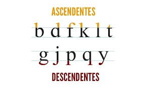
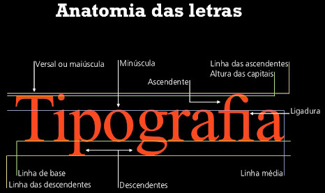
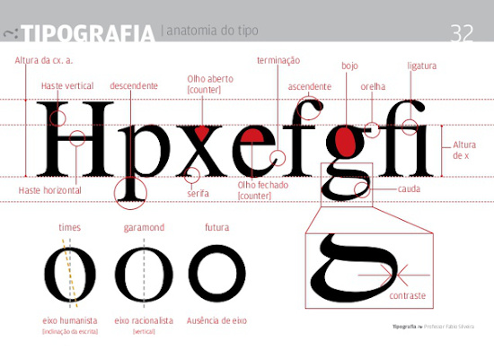
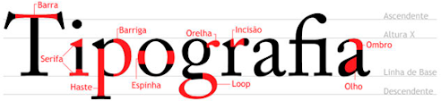
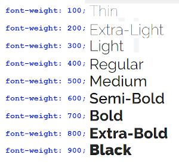

Tipografia
- A letra "x" minúsculo é o ponto de partida para a construção de qualquer (ou grande maioria) fonte. Chamamos de Altura 'x'
- As letras maiúsculas têm sua altura definida através do parâmetro "altura das maiúsculas"
- O quanto que uma letra minúscula vaza na altura pra cima ou pra baixo se chama, respectivamente, ascendente e descendente

- A soma de todas as alturas se chama corpo
- Serifa: a serifa cria uma linha imaginária que o nosso cérebro percebe e facilita a leitura das palavras (assim se acredita...)
- São INÚMEROS os elementos anatômicos dos tipos
  
- Variações de família tipográfica

- Categorias de fontes
- serifada
- sans-serif
- display (comemorativa)
- monoespaçada
- handwriting (escriptada)
Veja mais sobre tipografia na página seguinte.